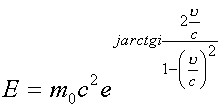
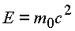

|
В. И. ЕЛИСЕЕВ ВВЕДЕНИЕ В МЕТОДЫ ТЕОРИИ
ФУНКЦИЙ ПРОСТРАНСТВЕННОГО КОМПЛЕКСНОГО ПЕРЕМЕННОГО |
|
3.2. Энергия в пространстве
Пространственно-временные координаты, введенные теорией относительности, позволяют записать основные уравнения движения в четырехвекторной форме.
Рассмотрим, к каким последствиям приводит запись этих четырехвекторов в комплексном пространстве. Если взять вектор скорости
то, чтобы превратить эти векторы в систему четырех пространственно-временных координат, эти векторы делят на величину
так, что четырехвектор скорости записывается в виде [9]
.
Видно, что один из компонентов чстырехвектора всегда больше скорости света. Это одно из противоречий, которое необходимо преодолеть математическому описанию теории относительности. В комплексном пространстве эта матрица запишется в виде
и преобразуется по законам комплексной алгебры
(3.3.) |
Таким образом, в сферической системе координат скорость
системы К выражается как вектор с модулем, равным скорости передачи возмущения в среде, и аргументом, выраженным функцией , где u - скорость в системе К. Это выражение показывает, что с какой бы скоростью u ни двигался объект в системе К, волна от него будет распространяться со скоростью возмущения Даже если.
Соотношение показывает, что даже при скоростях, равных по осям координат бесконечной величине, волна взаимодействия имеет конечную скорость, равную скорости взаимодействия.
Здесь необходимо признать, что взаимодействие объектов друг с другом рассматривается как взаимодействие пространств различной по величине размерности.
А пространства разного уровня размерности могут взаимодействовать только через
Явления на бесконечности переносятся в ограниченный объем сферы радиуса
с c выколотымЕсли скорость
Рис. 41. Многомерность физического пространства, вызванная ограничением величины скорости взаимодействия до предельной скорости света
С вектором скорости тесно связаны уравнения для энергии импульса.
В теории относительности имеем:
;
,
где
В комплексное пространстве (
Y) четырехвектор энергии импульса запишется в виде.
Выражение показывает, что с какой бы скоростью u ни двигался объект-система K' в системе К ее модуль, модуль импульса, постоянен и равен величине
Из условия равенства комплексных чисел получаем известные соотношения теоретической физики между массой
, энергией Е и импульсом p частиц:;
из равенства модулей
из равенства аргументов
.
Импульс в комплексных координатах описывает сферу радиусом
. Если энергия равна импульсу , когда , то(3.4.) |
Соотношение (3.4) вводит размер
Диаметр
(3.5.) |
Энергия частицы, движущейся со скоростью света, разлагается на два взаимно перпендикулярных несуммируемых вектора, имеющих свое начало в двух разных точках окрестности
Выразим энергию через комплексный импульс и комплексную скорость
..
Таким образом

Энергия согласно этим преобразованиям представляет геометрически в пространстве сферу, ядро которой есть пересечение двух изолированных e -туннелей радиуса
Эйнштейновская формула энергии

есть модуль энергетической сферы
.Энергия частицы определяется двумя энергетическими векторами:
;.
Если
, то имеем формулу Эйнштейна.
Если
, то опять возвращаемся к формулеЕсли
, то получаем выражение.
Таким образом, при превышении скорости света вектор энергии поворачивается в пространстве на угол p по энергии
E1 и на угол p /2 по энергии Е2. Формула Эйнштейна есть частный критический случай в природе.Мини оглавление:
[0], [1.1.1, 1.1.2, 1.1.3, 1.1.4, 1.1.5, 1.1.6, 1.1.7, 1.1.8, 1.2, 1.2.1, 1.2.2, 1.2.2.a, 1.2.2.b, 1.2.2.c, 1.2.2.d, 1.2.2.e, 1.2.2.f, 1.2.2.g, 1.2.2.h, 1.2.3, 1.3.1, 1.3.2, 1.3.3, 1.3.4, 1.3.5, 1.3.6, 1.4.1, 1.4.2, 1.5, 1.6, 1.7.1, 1.7.2, 1.7.3.1, 1.7.3.2, 1.7.3.3, 1.7.4.1, 1.7.4.2, 1.8.1], [2.1, 2.2],[3.1, 3.2, 3.3, 3.4.1, 3.4.2, 3.4.3, 3.4.4, 3.4.5],[4.1, 4.2, 4.3, 4.4],[5.1, 5.1.Рис.52, 5.2, 5.3, 5.4, 5.4.Т1, 5.4.Т2, 5.4.Т3, 5.5.1, 5.5.2, 5.5.3, 5.5.4],[6.1.1, 6.1.2, 6.2.1, 6.2.2, 6.2.3, 6.2.4, 6.2.5, 6.3, 6.4.1, 6.4.2, 6.5.1, 6.5.2],[7.1, 7.2, 7.3, 7.4, 7.5, 7.6, 7.7.1, 7.7.2, 7.8.1, 7.8.2, 7.8.3, 7.9],[8.1, 8.2.1, 8.2.2, 8.3, 8.4, 8.5, 8.6, 8.6.T1, 8.7, 8.8.1, 8.8.2, 8.8.3, 8.9.1, 8.9.2, 8.9.3, 8.10, 8.10.T2, 8.10.T3],[9.1, 9.2, 9.3, Рис.88, 89, 90, 91, 92, 93, 94, 95, 96, 97, 98, 99, 100],[10.1, 10.2, 10.3, 10.4, 10.5, 10.6, 10.7, 10.8, 10.9, 10.10, 10.11, 10.12, 10.13, 10.14, 10.15.1, 10.15.2, 10.16.1, 10.16.2, 10.17, 10.18],[11]
Размещенный материал является электронной версией книги: © В.И.Елисеев, "Введение в методы теории функций пространственного комплексного переменного", изданной Центром научно-технического творчества молодежи Алгоритм. - М.:, НИАТ. - 1990. Шифр Д7-90/83308. в каталоге Государственной публичной научно-технической библиотеки. Сайт действует с 10 августа 1998.
E-mail: mathsru@gmail.com